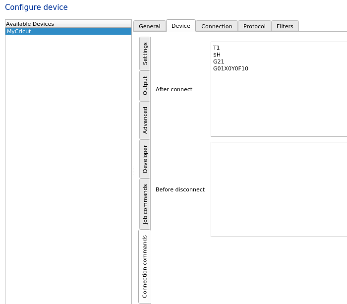

Configuring CutcutGo
Warning
Make sure to reprogram the micro-controller of your Cricut Maker before following these instructions ! See Flashing the CutcutGo bootloader for more details.
Installing InkCut
We slightly modified the InkCut project in order to add support for the Cricut Maker. Our modified version can be found in our dedicated InkCut repository.
Install InkCut with the following commands (Debian-like machine):
$ git clone https://github.com/virtualabs/inkcut-cutcutgo.git && cd inkcut-cutcutgo
$ sudo apt install python3-pip python3-pyqt5 python3-setuptools libcups2-dev python3-pyqt5.qtsvg
$ sudo pip install .
Configuring InkCut
Launch InkCut and go straight to the Device Setup menu. Add a new device and select the Cricut Maker Champagne type. Once done, edit the device settings starting with the Connection tab. Use the following settings:

Go to the Protocol tab, and select the GCODE protocol. Untick the Use builtin and startup commands option, set the decimal precision to 4 and set the lift mode to Custom. Set the raise GCODE to G01Z0F10 and the lower GCODE to G01Z-10F10. These are GCODE commands used to raise and lower the tool heads.

Go to the Device tab and then to the Connection commands vertical sub-tab in order to set the following commands in the after connect text box:
T0 ; home tool A
$H
T1 ; home tool B
$H
T0 ;select tool
G21
G01X0Y0F10
Use T1 to automatically select the B tool, or T0 to use the A tool.
{kind=link}
Last, go to the device Output vertical sub-tab and set the X and Y scale to 0.2.
Your device is ready to draw/cut !
Cut your first design !
Select a SVG file, load it into InkCut and make sure to have set a left margin in the Material tab of at least 40mm (this measure has not already been precisely determined yet).
Click on the Device menu and then Send to device. InkCut will connect to the Cricut Maker and send GCODE. The Cricut Maker is expected to home all axes (X and Z) and then start cutting/drawing depending on the selected tool.